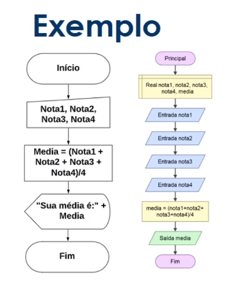

Fluxograma
Fluxograma é uma ferramenta utilizada para representar graficamente o algoritmo, isto é, a sequência lógica e coerente do fluxo de dados.

O que são variáveis?
Na programação, uma variável é um objeto (uma posição, frequentemente localizada na memória) capaz de reter e representar um valor ou expressão.
Declaração de variável e vetor em pseudocódigo
- INÍCIO
- DECLARA vetor de notas: número
- DECLARA total: número
- DECLARA media: número
- LER vetor de notas
- FAÇA vetor de notas até última posição
- ATRIBUIR cada posição em total
- media = total / tamanho do vetor
- IMPRIMIR media
- FIM
O que é uma constante?
São valores imutáveis e não são alterados durante a vida útil do programa.
- INÍCIO
- DECLARA pi = 3,14: constante
- DECLARA raio: número
- FIM